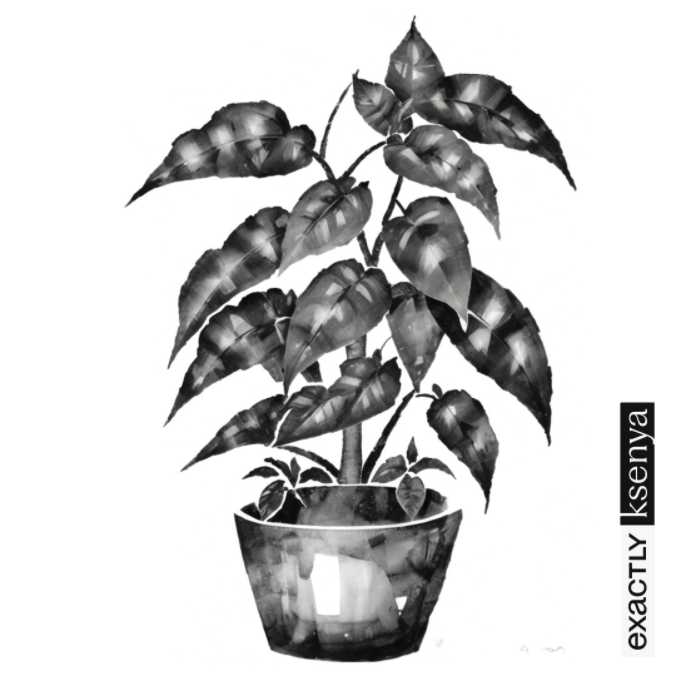

Про Кулямпу
Кулямпа - це неймовірно цікава рослина, яка відзначається своєю унікальною формою та колоритом. Вона відноситься до сімейства Кулямповідних (Curiousa spp.) та зростає в найвіддаленіших куточках світу.

Кулямпа привертає увагу своєю незвичайною формою, яка нагадує сферу. Її листя мають яскравий зелений колір, а на поверхні можна помітити невеличкі водяні краплі, що додають рослині чарівність.
Легенди та оповідання про Кулямпу міцно вкорінилися в культурі та народних віруваннях. Вважається, що той, хто вирощує Кулямпу, має привабливість та удачу в житті.
Користі від Кулямпи
Кулямпа має безліч корисних властивостей для здоров'я. Вона містить унікальні антиоксиданти, які сприяють загальному покращенню стану організму та підвищують життєвий тонус.
Наукові дослідження показали, що екстракт Кулямпи має потужний протизапальний ефект та сприяє зміцненню імунної системи. Листя Кулямпи використовуються у народній медицині для приготування чаю, який позитивно впливає на здоров'я шкіри та волосся.
Догляд за Кулямпою
Догляд за Кулямпою - це ціла наука. Вона потребує регулярного поливу, розташування на добре освітленому місці та використання спеціальних добрив для досягнення найкращих результатів у її рості.
Кулямпу слід тримати подалі від прямих сонячних променів, але забезпечити їй достатнє освітлення. Регулярний полив потрібен, але не допускайте перезволоження ґрунту, оскільки це може завдати шкоди кореневій системі.